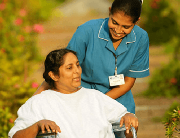

| Specialisations | Doctors | Available time | Branch |
|---|---|---|---|
| Orthopedics | Dr. sherly | 9:00AM-8:00PM | Banashankari |
| Oncology | Dr. Rahul | 9:00AM-8:00PM | Jaynagar |
| Cardiology | Dr. Tina | 9:00AM-8:00PM | Bannerghatta |
| Neurology | Dr. Anjali | 9:00AM-8:00PM | Jaynagar |
Note:
On Saturdays and Sundays above mentioned doctors will be available
only from 9:00AM 11:00AM
 |
ORTHOPEDICS Our Institutes are at the forefront in offering the latest in Orthopedic treatments and Orthopedic surgical advancements in India on par with the best centres in the world. Our Orthopedicians trained at the top centres worldwide, bring with them the latest and best techniques and work in our facilities that have the latest cutting edge technology in terms of equipments, operating rooms, recovery areas and advanced Physical therapy facilities. We have dedicated & well equipped Orthopedic surgery complexes with laminar flow & various modern equipment like image intensifier, operating microscope, computer navigation system, top of the line arthroscopy system etc. |
| ONCOLOGY Cancer is a ruthless disease. It evolves constantly and spreads relentlessly. It's hard to catch and even harder to treat. But that is about to change, with Precision Oncology. Sanjeevini's unique approach to diagnosing, treating and monitoring cancer that is as precise as it can get. Today, Oncology signifies comprehensive care, which requires commitment, expertise and immense dedication. The Sanjeevini Oncology Team brings together the brightest minds in surgical, medical & radiation Oncology. |
 |
| CARDIOLOGY The Sanjeevini Heart Institutes are regarded as one of the best heart hospitals in India, performing a multitude of treatments and procedures in cardiology and cardiothoracic surgery. Our team of cardiologists and cardiothoracic surgeons are trained at the top institutes in India and abroad and are completely dedicated to the treatment for coronary heart diseases. Our pioneering work for the prevention and treatment of cardiac diseases has led to the achievement of better outcomes and improved quality of life for thousands of cardiac patients who visit us each year with complex heart problems. |
| NEUROLOGY
The department of neurosurgery at Sanjeevini Hospitals in India is well equipped to treat all the neurological diseases including stroke, headache, epilepsy, coma, neuropathies, multiple sclerosis, myopathies, Parkinson's disease, Myasthenia Gravis and many more, establishing it as one of the best hospital for neurosurgery treatment in India. Neurosurgery a branch of surgery involved with the brain injury, spine and nerves, is a key specialty at Sanjeevini hospitals. Our neurosurgery doctors treat neurological diseases such as brain injury or diseases, congenital malformations like atlanto-axial dislocation, spinal dysraphism etc. Treatment of seizures or epilepsy as well as modern treatments for movement disorders like Parkinson's disease are further specializations. More than 1000 major neurosurgeries are being carried out every year. |
 |